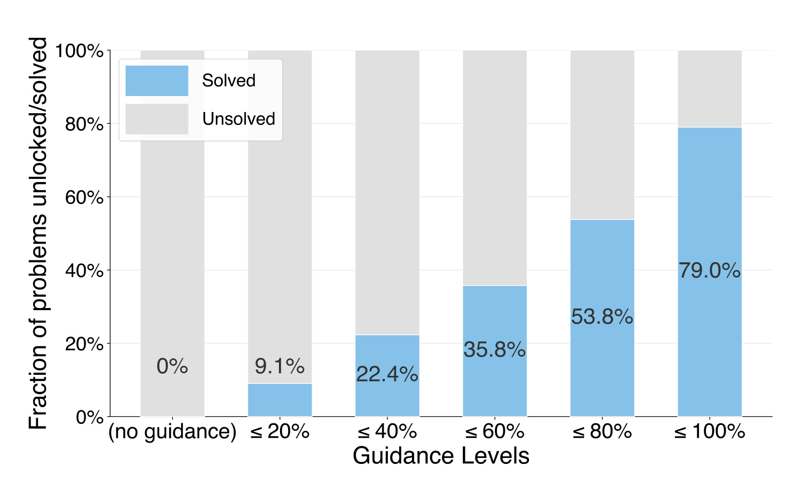
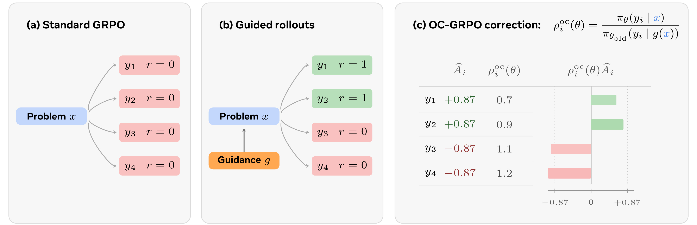
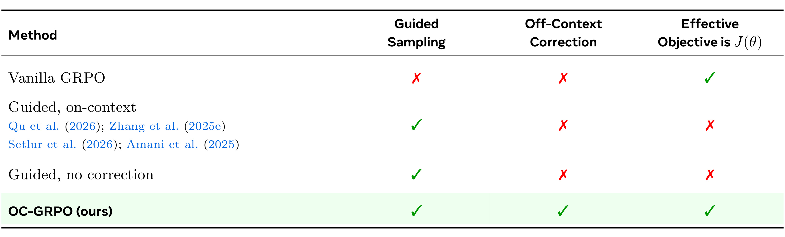
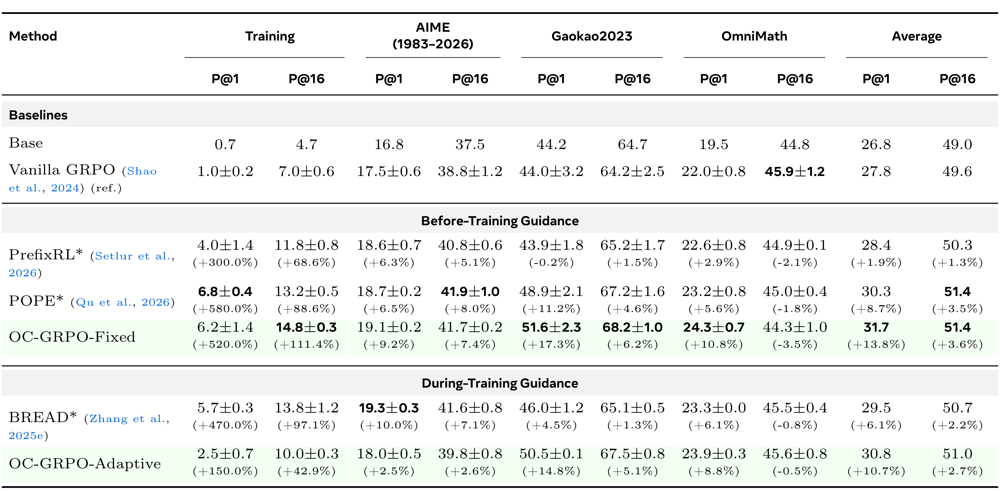
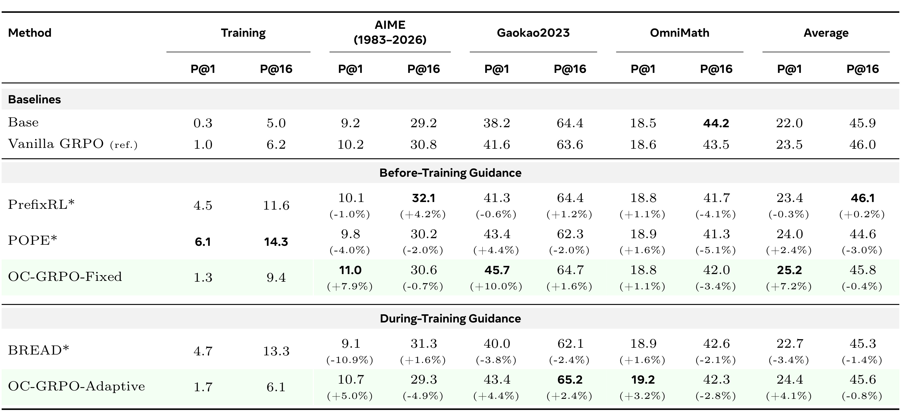
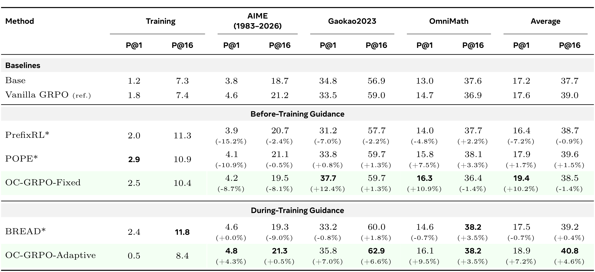
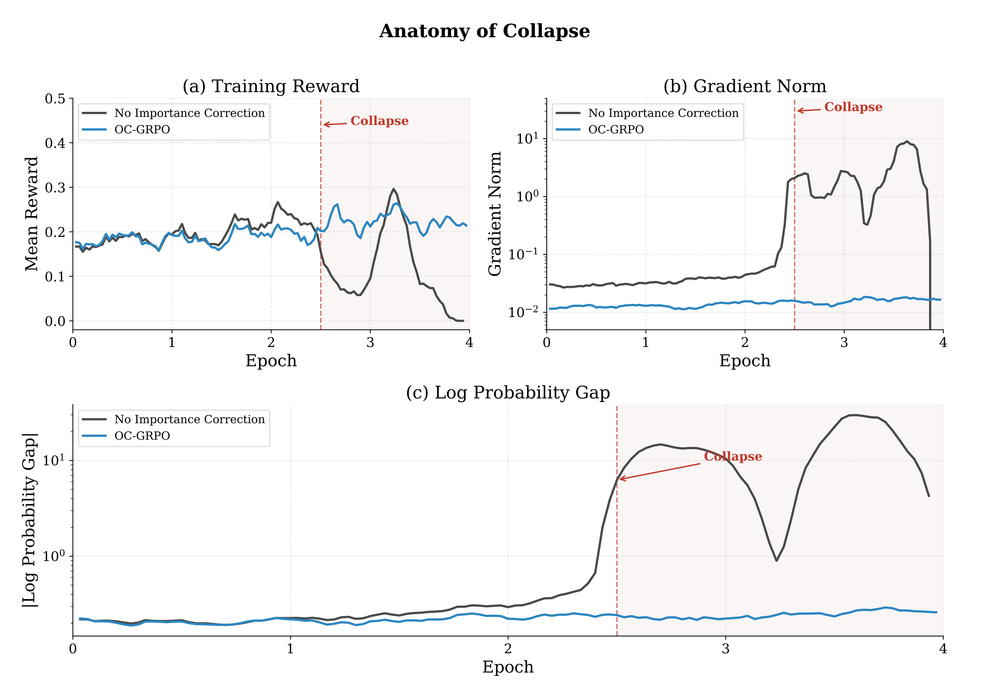
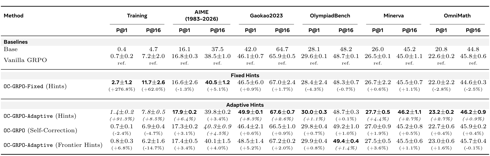

Off-Context GRPO：利用特权信息学习解决难题
《Off-Context GRPO: Learning to Reason on Hard Problems using Privileged Information》由 Priyank Agrawal、Ankur Samanta、Shervin Ghasemlou、Boris Vidolov、Jalaj Bhandari、Kavosh Asadi、Daniel Jiang 与 Aditya Modi 撰写，作者来自 Meta AI 与哥伦比亚大学；一作同时隶属哥伦比亚大学，工作在 Meta 完成。论文于 2026 年 7 月 21 日公开 arXiv v1，入口为 arXiv:2607.19313，官方代码仓库 已核验可访问。它讨论的不是如何设计更强的数学提示，而是一个更基础的后训练问题：训练时借助部署阶段不可见的信息生成轨迹，策略梯度究竟应当归属于哪一个上下文。
在最困难的问题上，如果模型的一组采样全部失败，GRPO 的组内奖励方差与梯度都会归零；训练时加入解答前缀虽能重新制造非零奖励，却也让 rollout 来自部署时不存在的上下文，若不校正这种分布错位，模型学到的可能只是依赖提示的成功。
1. 背景和问题
带可验证奖励的强化学习（RLVR）之所以适合数学、代码和形式化推理，是因为最终答案可以由规则、执行器或证明检查器直接判定。标准 GRPO 对同一道题采样一组响应，按组内奖励均值和标准差计算相对优势：同组中既有成功又有失败，成功轨迹得到正优势、失败轨迹得到负优势，策略才能沿这种差异更新。它的弱点也来自同一机制。对真正困难的题，若一组响应全错，奖励全为零、标准差为零，所有优势按惯例也设为零；无论再训练多少次，这道题都没有梯度。论文把这种“需要先成功一次才能学会成功”的断层称为 learning cliff。
作者用 (p(x)) 表示旧策略在原始问题 (x) 上的期望可验证奖励。困难样本满足 (p(x)\approx 0)，但真实训练用的是有限组采样，所以更直接的现象是 pass@G 为零。传统绕路之一是把专家解答作为监督目标，采用 SFT、off-policy RL 或混合 SFT-RL；这样当然能提供信号，却可能把模型原有推理风格压向专家轨迹，并需要奖励塑形、熵控制等额外稳定器。另一条更“外科手术式”的路线，是只在 rollout prompt 中加入解答前缀、提示或 oracle 信息，让模型仍然自行续写并接受 verifier 评分。只要指导后的成功率 (q(x)) 高于 (p(x))，组内便可能重新出现正负奖励，GRPO 得以跨过 cliff。

Figure 2 把这种解锁作用画得很清楚。没有 guidance 的左端为 0%，而前缀长度不超过参考解答 20% 时，已有 9.1% 的困难题能够产生至少一次成功；前缀比例继续增加到 40%、60%、80% 和 100%，解锁比例依次达到 22.4%、35.8%、53.8% 和 79.0%。这里的“0%”与正文给出的无指导期望奖励 0.091 不是同一统计量：图中柱子统计一批困难问题中有多少题被某档指导解锁，caption 的 0.091 则描述旧策略的经验期望 verifier reward，不能混写。更重要的是，曲线说明 guidance 越完整，成功样本越容易得到，但完整解答也越可能让模型只是跟随现成路径；因此后文“使用足以越过 cliff 的最短提示”不是省 token 的经验偏好，而是兼顾探索覆盖与校正方差的设计原则。
真正的麻烦在于，guided rollout 并不是从部署时的策略分布采样。设 (g(x)) 是把特权信息加入问题后的 prompt，已有 guided-target 方法通常在 (g(x)) 下采样，也在 (g(x)) 下计算当前策略与行为策略的概率比。这等价于优化“给定提示时答对”的 (J^{\mathrm{guide}})，而部署考核的是“只给原题时答对”的 (J)。遮住 guidance token 的 loss 也不能解决问题，因为响应 token 仍然条件于 guidance；采样分布没有改变，梯度仍把“借提示才能出现的成功”当成无提示策略自己的功劳。
已有方法有时仍会有效，论文把这种迁移假设称为 back-generalization：如果 (g(x)) 与 (x) 诱导的续写分布足够接近，那么在有指导上下文改好一个 continuation，也可能顺带改好无指导上下文。但这不是定理。附录的二动作玩具例子中，“shortcut” 在有指导时必对、无指导时必错，“robust” 在两种上下文都以概率 (\beta) 成功；于是 guided objective 偏好全选 shortcut，真实目标却偏好全选 robust，二者最优策略正好相反。OC-GRPO 的研究问题因此可以精确表述为：能否继续利用 guidance 提升探索成功率，同时把由 guided distribution 采到的梯度校正回原始无指导目标？
这个问题也超出数学推理。推荐系统后训练可能使用未来点击、完整会话、人工偏好解释或高质量检索证据作为训练期特权信息；Agent 训练可能看到 oracle 子目标、工具真值、完整环境状态或失败后的诊断。若线上只能看到当前请求与历史状态，那么“用更丰富上下文生成轨迹，再假装轨迹来自线上上下文”同样会产生 off-context mismatch。论文的价值在于把这类实践从模糊的“提示泄漏”提升为可写出采样分布、目标分布和校正比率的优化问题。
2. 方法
2.1 从 GRPO 目标到 off-context 目标错位
论文先固定真正想优化的 RLVR 目标。训练分布 (\mathcal D) 给出问题 (x)，策略 (\pi_\theta) 自回归生成完整响应 (y)，verifier 只检查抽取出的最终答案并给出二值奖励。这个起点很重要，因为后续所有 change of measure 都要回到同一个无指导目标，而不是另造一个更容易取得高分的训练目标：
符号解释：(\theta) 是当前策略参数，(\mathcal D) 是原始问题分布，(x) 不含训练期特权信息，(y) 可以包含推理过程，(r(x,y)\in{0,1}) 表示抽取答案是否与标准答案等价。这个定义同时规定了采样上下文与评估上下文，因此部署目标不是抽象的“答对更多”，而是明确要求响应来自 (\pi_\theta(\cdot\mid x))。
GRPO 对每个问题由旧策略 (\pi_{\theta_{\mathrm{old}}}) 采样 (G) 条响应，用组内标准化优势 (\hat A_i=(r_i-\mu_r)/\sigma_r) 更新。忽略书写细节后，其 clipped surrogate 为：
符号解释：(T_i) 是第 (i) 条响应长度，(\rho_{i,t}=\pi_\theta(y_{i,t}\mid x,y_{i,<t})/\pi_{\theta_{\mathrm{old}}}(y_{i,t}\mid x,y_{i,<t})) 是常规 PPO token 比率，(\epsilon) 限制单步更新，(\beta) 控制相对参考模型的 KL 惩罚。关键不是公式复杂，而是 (\hat A_i) 完全来自组内奖励差异；当 (\sigma_r=0) 时，困难题不会贡献梯度。为把“无信号”与“借指导获得信号”分开，作者接着定义原始与有指导成功率：
符号解释：(g(x)) 是添加解答前缀或 hint 的 rollout prompt，有效指导要求 (q(x)>p(x))；(J^{\mathrm{guide}}) 评价的答案仍属于原题，但生成分布条件于 (g(x))。因此 (J^{\mathrm{guide}}) 与 (J) 的差别不在 verifier，而在 response distribution。guided-target 方法解决了“采不到成功”，却把目标换成了“带提示时成功”，这正是需要校正的源头。
2.2 Off-Context GRPO 的重要性校正
OC-GRPO 保留 guided rollout (y_i\sim\pi_{\theta_{\mathrm{old}}}(\cdot\mid g(x)))，但把常规策略比的分子改回无指导上下文。它不重新生成一批昂贵的无提示轨迹，而是对同一条已采样响应分别问“旧策略在带提示时多可能生成它”和“当前策略在不带提示时多可能生成它”。对第 (t) 个 token，论文定义：
符号解释：分母是真正产生该 token 的旧策略在 guided context 下的概率，分子则是待优化策略在原始问题 (x) 下复现同一 token 的概率；历史 (y_{i,<t}) 相同，只改变上下文。若某题不需要指导而 (g(x)=x)，该比率自动退化为标准 GRPO ratio。这项最小改动的实质，是允许探索使用更容易成功的行为分布，却让每个 token 的信用仍归属于部署时的无指导策略。

Figure 1 的三联图把这个改动拆成三个时间顺序。左图中四条无指导轨迹奖励全为零，组优势也全为零；中图加入 guidance 后，(y_1,y_2) 成功而 (y_3,y_4) 失败，组内标准化优势分别为 (+0.87) 与 (-0.87)。右图不是简单“奖励成功”，而是再乘 off-context ratio：示例中成功轨迹的权重为 0.7、0.9，正贡献被压低；失败轨迹权重为 1.1、1.2，负贡献被放大。直觉是，如果一条正确解答只在提示下变得高概率，无提示策略不应获得全部功劳；相反，在强提示下仍失败的轨迹暴露了更顽固的错误，应保留甚至加强惩罚。这个数值示意不是实验证据，却准确呈现了后续定理证明的信用方向。把 (\rho^{\mathrm{oc}}) 代回原 surrogate，便得到 OC-GRPO 的训练目标：
符号解释：组优势、token 平均、clipping 与 KL 结构均保持 GRPO 原样，只有概率比换成 (\rho^{\mathrm{oc}})。实现上需要对同一已生成 token 序列再做一次无指导 prompt 的 log-probability 计算；它不要求新奖励模型，也不改变 verifier。需要谨慎的是，论文严格证明的无偏性是 response-level change of measure；实际 token-level surrogate 还有 clipping、组优势估计与有限采样，不能把工程实现夸大为完全无偏的梯度。

原文 Table 1 用三列勾叉厘清了容易混淆的路线。Vanilla GRPO 的有效目标就是 (J(\theta))，但它没有 guided sampling，过不了困难样本的 learning cliff；已有 guided on-context 或 guided no-correction 方法能产生成功轨迹，却既没有 off-context correction，也不再以 (J(\theta)) 为有效目标。OC-GRPO 是唯一同时勾选三项的组合。表格没有声称其他方法必然失败，而是指出它们依赖 back-generalization：模型必须把有指导上下文的改进自发迁移回无指导上下文。该依赖在 7B 上有时能工作，在 3B/1.5B 的实验中则明显变脆，这让“目标是否对齐”从理论洁癖变成可观察的容量效应。
2.3 行为感知信用分配与方差边界
论文在 response level 分析为什么重要性比会产生合理信用。令 (Y^+) 与 (Y^-) 分别为 guided rollout 中答对和答错的集合，使用中心化优势 (\hat A(x,y)=r(x,y)-q(x))。在当前参数等于行为策略参数时，成功与失败条件下的平均校正因子满足：
符号解释：(\lambda^+) 是正确 guided trajectory 上 (\pi_{\theta_{\mathrm{old}}}(y\mid x)/\pi_{\theta_{\mathrm{old}}}(y\mid g(x))) 的条件均值，(\lambda^-) 是错误 trajectory 上的条件均值。只要 (0<p(x)<q(x)<1)，成功信用整体被抑制、失败惩罚整体被增强。对极难题 (p(x)\approx0)，这并不表示成功样本毫无作用；它表示模型只能因“在原题下本来也有一定概率生成这条成功轨迹”的部分得到信用，避免把 oracle 泄露当成自主推理。把这两个条件因子代入 score-function 梯度，可以得到：
符号解释：(s_x(y)=\nabla_\theta\log\pi_\theta(y\mid x)|{\theta=\theta{\mathrm{old}}}) 是无指导上下文的 score function，(q(1-q)) 是 guided success/failure 混合产生的奖励变异。标准无指导 GRPO 在 (p) 极小时几乎没有成功侧或失败侧差异，而此式只要 (q>0) 且失败条件 score 非零，就仍可产生失败侧更新。它把 guidance 的作用限定为“让可比较轨迹出现”，不让 guidance 自己进入部署策略的条件输入。由于重要性采样最常见的风险是方差爆炸，作者还把比率拆成常规 on-policy drift 与上下文校正：
符号解释：(\rho_{i,t}) 是可由 PPO clipping 控制的参数漂移，(\gamma_{i,t}) 才是 OC-GRPO 新增的 context correction；(n) 为 guidance token 数，(\eta) 假设每加入一个 guidance token，对下一 token 对数概率的改变有界。界随 (n) 而不是完整 rollout 长度 (T) 指数增长，直接推出“用最短的、刚好能产生成功的 guidance”。不过该界依赖逐 token 正则性假设，并不保证真实模型的长解答前缀一定低方差，工程上仍需监测 ratio、有效样本量与梯度范数。
2.4 固定与自适应级联指导
在 MATH 上，作者把参考解答 (z^\star(x)) 按字符长度切成五档嵌套前缀。这个模块不改变 verifier，也不进入部署模型；它只负责为当前完全失败的问题寻找刚好能制造组内奖励差异的行为上下文，随后仍由上一节的重要性比把更新拉回原始问题：
符号解释：(T^\star) 是参考解答长度，(h_\ell) 是第 (\ell) 档前缀，(g_\ell) 是把原题与前缀组合后的行为 prompt。小于 100% 的前缀要求模型独立完成剩余推理，完整前缀则要求重述并给出答案。前缀是纯字符串操作，不需要额外 LLM 生成 hint；附录还测试了基于失败轨迹与参考解答生成的五级 hints，说明理论只依赖上下文分布差异，不依赖特权信息的具体形态。
OC-GRPO-Fixed 在 RL 前用 base model 为每个困难问题选择最小有效档位：从 20% 前缀开始，每档采样 8 次，只要出现一个正确答案便记录 (\ell^\star(x))，并把 (g_{\ell^\star(x)}(x)) 加入增强数据集 (D_{\mathrm{aug}})。该档位整个训练期固定，预处理成本可以复用。OC-GRPO-Adaptive 则在每个训练 step 先采样 (N) 条无指导轨迹；若全错，就从弱到强逐级生成新的 (N) 条轨迹，遇到首个成功组后停止，并把实际行为上下文放入重要性比的分母。Adaptive 更贴合当前策略难度，却可能对每个失败问题重复多轮推理；Fixed 更便宜、更容易复现，也是论文推荐的默认版本。 两种方案在推理阶段都不保留 prefix、hint 或校正比，最终模型只接收原始 (x)。
3. 实验结果
3.1 数据、基线与训练口径
训练数据来自 MATH 的 Levels 3-5，共 5,586 道中高难度题。作者先让对应 base model 对每题独立采样 64 次，只保留 64 次全失败的题；Qwen2.5-7B-Instruct 得到 595 道困难题，3B 与 1.5B 也分别按自身 base model 重新筛选。这个口径很苛刻，却与论文问题高度一致：普通 GRPO 在这些题上起点没有组内成功。固定指导方法训练增强集 (D_{\mathrm{aug}})，自适应方法训练原始困难集 (D)，作者按各自数据集都跑 4 epochs 以做 epoch-matched 比较。
所有方法基于 veRL 与 vLLM 实现，冻结 base weights，只训练施加于全部线性层的 LoRA（rank 64、(\alpha=128)、dropout 0.05）。优化器为 AdamW，学习率 (10^{-5})，weight decay 0.01，梯度裁剪 1.0；每批 32 个 prompts、每题 16 条 rollouts、PPO mini-batch 32、每次 GRPO iteration 一个 PPO epoch，clip ratio 0.2，KL 系数与 entropy bonus 都设为 0。采样温度 0.7、top-p 0.95，奖励只判断 (\backslash boxed{}) 中答案的符号等价性。7B 使用三个种子 0/123/456，3B 与 1.5B 仅单种子；主结果以每题 16 条评估轨迹计算 Pass@1 与 Pass@16。
基线包括 vanilla GRPO、PrefixRL、POPE 与 BREAD。论文用星号标记后面三者，表示作者在同一 veRL 训练环中按统一数据和超参数重实现核心思想，而非直接照搬原论文数字。这提高了内部可比性，也引入实现偏差风险。评测覆盖 AIME 1983-2026、Gaokao2023 与 OmniMath；Table 5 的 hint 消融另加入 OlympiadBench 和 Minerva。需要注意，Table 2 的 Average 只平均三个主测试基准，不包含困难训练集，因此摘要所说的 3.9 绝对点不是把训练成绩混进平均所得。
Pass@1 与 Pass@16 也回答不同问题：前者近似单次调用的平均正确率，后者表示 16 次采样中至少一次成功的概率，后者上升通常要求策略保留足够广的解题覆盖。作者用同一组 16 条轨迹的无偏估计器计算两者，并统一报告第 4 个 epoch 的 checkpoint；这避免逐基准挑最好点，却仍可能掩盖更早的最优时刻。困难集又是按 base model 连续 64 次全失败筛出的条件样本，训练后在这批题上出现成功既可能来自真正学习，也可能包含筛选噪声的回归效应。因此读表时应把测试基准的 Pass@1 作为主证据，把困难训练集成绩看作“是否越过 cliff”的诊断，并用 Pass@16 检查单次准确率提升是否以牺牲探索多样性为代价。
3.2 7B 主结果：平均 Pass@1 提升，但并非所有列都更好

Table 2 中，vanilla GRPO 的三个测试基准平均 Pass@1 为 27.8，OC-GRPO-Fixed 达到 31.7，绝对提高 3.9 点、相对提高 13.8%；它也比最强 guided-target 基线 POPE 的 30.3 高 1.4 点。分基准看，Fixed 在 Gaokao2023 上从 44.0 提到 51.6，在 OmniMath 上从 22.0 提到 24.3，AIME 从 17.5 提到 19.1。困难训练集 Pass@1 从 1.0 提至 6.2、Pass@16 从 7.0 提至 14.8，说明特权指导确实让原本全失败的题产生了可学习迁移。Adaptive 平均 Pass@1 为 30.8，仍比 vanilla 高 10.7%，但低于 Fixed，且训练中要付出额外重采样成本。
这张表也给出不宜省略的反例。OC-GRPO-Fixed 的 OmniMath Pass@16 为 44.3，低于 vanilla 的 45.9；Average Pass@16 为 51.4，只比 49.6 提升 3.6%，远小于 Pass@1 的 13.8%。POPE 的 Average Pass@16 同为 51.4。换言之，Fixed 更明显地提高单次采样成功率，却没有在所有任务上同步扩大 16 次采样的解空间覆盖。7B 三种子均值仍带有显著方差，例如 Fixed 的训练 Pass@1 为 (6.2\pm1.4)，Gaokao2023 为 (51.6\pm2.3)；论文按均值加粗，未做显著性检验。这些细节支持“校正有效”，但还不足以证明它全面支配所有 guided 方法。
3.3 3B 与 1.5B：目标错位呈现容量依赖

Table 3 的 3B 单种子结果显示，vanilla GRPO 平均 Pass@1 为 23.5，OC-GRPO-Fixed 为 25.2，相对提高 7.2%；Adaptive 为 24.4，提高 4.1%。更有辨识度的是未校正 guided-target 基线：BREAD 降到 22.7，相对下降 3.4%，PrefixRL 也为 23.4、略低于 vanilla；POPE 的 24.0 只提高 2.4%。Fixed 的优势主要来自 Gaokao2023，从 41.6 升到 45.7；AIME 仅从 10.2 到 11.0，OmniMath 几乎不变。Pass@16 方面 Fixed 平均 45.8，反而比 vanilla 的 46.0 低 0.4%，Adaptive 也低 0.8%。这说明校正对单次正确概率的收益较稳定，但对多样采样覆盖并没有相同保证。

Table 4 把容量效应推得更明显。1.5B 的 vanilla GRPO 平均 Pass@1 为 17.6，PrefixRL 降到 16.4（-7.2%），BREAD 为 17.5（-0.7%）；OC-GRPO-Fixed 则达到 19.4（+10.2%），Adaptive 为 18.9（+7.2%）。Fixed 在 Gaokao2023 从 33.5 提到 37.7，在 OmniMath 从 14.7 提到 16.3，但 AIME 从 4.6 降到 4.2。Average Pass@16 更揭示方法取舍：Fixed 为 38.5，低于 vanilla 的 39.0；Adaptive 达到 40.8，提升 4.6%。因此论文所谓“小模型更需要校正”在平均 Pass@1 上得到支持，却不能外推为 Fixed 在每个基准、每个 k 上都最好。
3B 与 1.5B 只有单随机种子，是这组容量结论的最大统计限制。作者的解释是，大模型更可能把 (g(x)) 下学到的 continuation back-generalize 到 (x)，小模型无法吸收目标错位；表格趋势确实符合这一假设，但也可能受不同模型困难集构成、单次训练噪声和超参数未随规模重调影响。更稳妥的结论是：未校正 guided training 在小模型上出现了可复现价值很高的负迁移信号，而 OC-GRPO 在作者这一统一设置下保持正的平均 Pass@1 增益；是否存在单调容量规律，还需要多种子和更多模型家族验证。
3.4 校正必要性、提示消融与成本

Figure 3 是比最终表格更直接的机制消融。约 2.5 个 epoch 以前，无校正与 OC-GRPO 的训练 reward 走势相近；之后无校正曲线迅速下降，在第 4 个 epoch 接近零，而 OC-GRPO 保持约 0.2。与此同时，无校正的 gradient norm 从约 (10^{-2}) 到 (10^{-1}) 区间跳升到 (10^0) 乃至接近 (10^1)，无指导与有指导上下文之间的绝对 log-probability gap 也从低位扩大一个数量级以上；OC-GRPO 三条蓝线则总体稳定。三种现象在同一时间窗分叉，符合“把 guided trajectory 过度归功于 unguided policy，偏差持续累积并最终坍塌”的解释。
但图中没有误差带、种子数量或独立复现实验说明，不能据此估计坍塌概率。它比较的是作者称为 Masked no-IC 的特定实现，也不能证明所有不使用 Eq.8 的方法必然发生同样曲线。更准确的工程结论是：mask 掉 guidance token 并没有消除生成响应对 guidance 的条件依赖；当 log-probability gap、ratio 极值和梯度范数同时扩大时，应把 off-context bias 当作首要诊断，而不是只调低学习率。OC-GRPO 提供了对症的分布校正，Figure 3 则说明至少在这一训练设置中它能阻止三项稳定性指标共同失控。

Table 5 不再只用解答前缀，而是比较固定 hints、自适应 hints、自我纠正和 frontier hints。固定 hints 在困难训练集上最强，Pass@1 从 vanilla 的 (0.7\pm0.2) 提到 (2.7\pm1.2)，但在 AIME、OlympiadBench 与 OmniMath 的 Pass@1 分别为 -1.3%、-4.3% 和 -2.8%。Adaptive Hints 的跨基准表现更均衡：AIME +6.4%、Gaokao2023 +8.3%、OlympiadBench +1.1%、Minerva +4.4%、OmniMath +2.7%。Frontier Hints 在 OlympiadBench Pass@16 最好，却在训练 Pass@16 上下降 14.7%；Self-Correction 多数提升较小。结果说明 OC 校正可以配合多种 privileged context，但 guidance 的内容、强度与选择策略仍决定外推质量。
成本方面，论文正文称 Fixed 几乎没有额外训练成本，这应理解为相对每步重新采样的 Adaptive：Fixed 只在训练前为困难题做一次 5 档搜索，之后复用增强数据集。附录的基础设施信息显示，Fixed 与 vanilla 使用 2 张 NVIDIA A100 40GB，Adaptive 使用 4 张 A100 40GB，并以 FSDP CPU offload 和 vLLM tensor parallelism 2 运行；当无指导组失败时，Adaptive 最坏要按 5 档重新采样 (N) 条轨迹。论文没有报告 wall-clock、总生成 token、tokens/s、峰值显存或预处理耗时，因此“negligible additional cost”不能泛化到 Adaptive，也不能视为已完成的效率评测。复现时至少应分别记账前缀筛选、额外 forward 计算和 guided rollout 生成成本。
4. 总结
4.1 我的判断
OC-GRPO 最扎实的贡献，是把“训练时给一点答案会不会泄漏”转写成行为分布与目标分布的严格错位。它没有放弃特权信息带来的探索收益，也没有把专家轨迹直接变成监督目标，而是用重要性比规定每条 guided trajectory 在无指导策略下应当获得多少信用。方法改动小、可以嵌入 GRPO，理论给出 response-level 无偏性、成功/失败信用方向与 guidance-length 方差界，实验又同时提供 7B 主结果、小模型负迁移和 no-IC 坍塌三类证据，论证链条较完整。
对推荐与 Agent 系统，最可迁移的不是“给解答前缀”这个具体技巧，而是 privileged exploration, deployment-aligned update。训练推荐策略时，可以用未来反馈、完整会话或高质量教师排序帮助生成候选轨迹，但分子概率必须回到线上可见上下文；训练工具 Agent 时，可以用 oracle 子目标、工具状态或纠错提示让成功轨迹出现，再按实际部署 observation 做校正。若无法计算两个上下文下的 token likelihood，至少也应把 context gap、ratio 分布和对 guidance 的依赖度作为训练监控信号，而不是默认 back-generalization 会自动发生。
4.2 局限、复现重点与后续跟进
第一，证据几乎全部来自可验证数学任务、MATH 构造的困难集和 Qwen2.5 单一模型家族；开放式写作、代码执行、多轮 Agent 与推荐排序的 reward 更嘈杂，二值 verifier 结论未必直接成立。第二，3B 与 1.5B 仅单种子，容量依赖目前更像有力线索而非稳健缩放规律。第三，理论无偏性在 response level 成立，实际 token-level clipping、组归一化优势和有限样本会引入额外偏差；support condition 若被强 guidance 破坏，importance ratio 也可能失真。第四，方差上界依赖每个 guidance token 对 next-token log probability 影响有界，且上界随 guidance 长度指数增长，真实长前缀可能带来低有效样本量。第五，作者重实现 PrefixRL、POPE 与 BREAD，统一基础设施有利于公平比较，但实现差异可能影响基线强弱。第六，论文没有给出完整效率表，Fixed 的预处理成本和 Adaptive 的额外生成成本仍需独立核算。
后续复现至少做三件事。其一，在官方代码上重跑 7B 三种子并为 3B/1.5B 补齐多种子，同时报告显著性、每题 ratio 分位数和 effective sample size，检验容量趋势是否稳定。其二，把 guidance 从参考解答前缀换成检索证据、工具返回和未来交互反馈，分别测量短 guidance 是否足以越过 cliff，以及校正后能否在无特权上下文保持收益。其三，建立成本与稳定性联合面板，持续记录生成 token、wall-clock、显存、梯度范数、log-probability gap 和 no-IC 对照；如果 Pass@1 上升而 Pass@k、解题多样性或线上指标下降，应检查模型是否把概率质量集中到少数被 guidance 强化的轨迹。
最后，这篇论文不应被解读为“训练时可以安全使用任意答案信息”。它给出的许可带有明确条件：guidance 只用于打开探索空间，更新必须回到部署上下文，support overlap 与 ratio 方差必须可控，而且测试时不能保留特权信息。满足这些条件时，OC-GRPO 为稀疏奖励下的困难样本提供了一条简洁路线；不满足时，强 guidance 仍可能把系统推向另一种更隐蔽的目标泄漏。